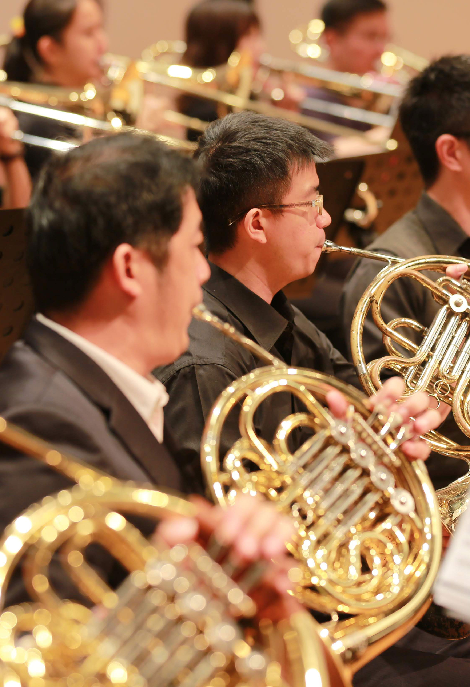
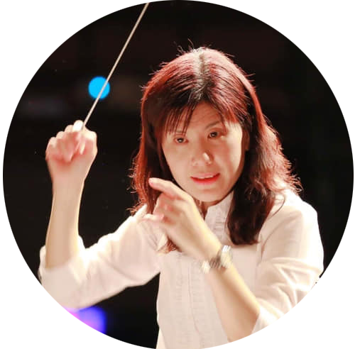

大新竹管樂團－千と千尋の神隠しハイライト
最新節目單
CONCERT PROGRAM
動態消息
LATEST NEWS
音樂讓我們零距離
HSINCHU WINDS SOUND OF STORY
大新竹管樂團
X
一人一故事
大新竹管樂團一人一故事，每個團員有自己的成長之路，在這些音樂靈感的背後有甚麼有趣的故事和生活片段呢？ 透過每月一次的樂人專題，邀請大新竹管樂團的成員，親自和你分享他們的日常點滴與音樂故事！從趣味到感性； 從過往到現在無所不談，讓你聽見每個音符背後那最真實的音樂人生。
VIEW MORE
HSINCHU WINDS SOUND OF STORY
［大人物專欄］許翠芸
音樂改變了我！成為大新竹管樂團首席的生活
- ［大人物專欄］許翠芸：音樂改變了我！成為大新竹管樂團首席的生活
- ［純音樂分享］一天的開始：放下內心的嘈雜，感受寧靜的自然山果
- ［通勤隨身聽］打卡小職員變身自然音樂大師
- ［客家傳知音］回家吧！音樂把我們帶到最原始也最純粹的地方
- ［一人一故事］陳為伶：為孩子種下第一顆創意種子
- ［IC之音］音樂故事─不會游泳的青蛙；大新竹管樂團【輕旅行‧海洋】
- ［大人物專欄］許翠芸：音樂改變了我樂團首席的生活

關於我們
ABOUT US
扣人心弦的永恆之聲 發掘生活的美好
2018年新竹縣傑出演藝團隊-大新竹管樂團成立於2014年，至今推出過「自然系列」、「親子系列」、 「經典系列」與「鄰舍系列」音樂會，同年，優質且高水準的演出獲得「新竹縣傑出演藝團隊」殊榮。 聚集了大新竹地區在地的專業音樂家、愛樂好手，以及學生們， 以致力於製作 多元結合、創新、寓教 於樂的親子音樂演出。
樂團成員
OUR TEAM
音樂總監
張聖以

客席指揮
馮麗朱
樂團團長
許瑜真
樂團副團長
江依藍
樂團首席
許翠芸